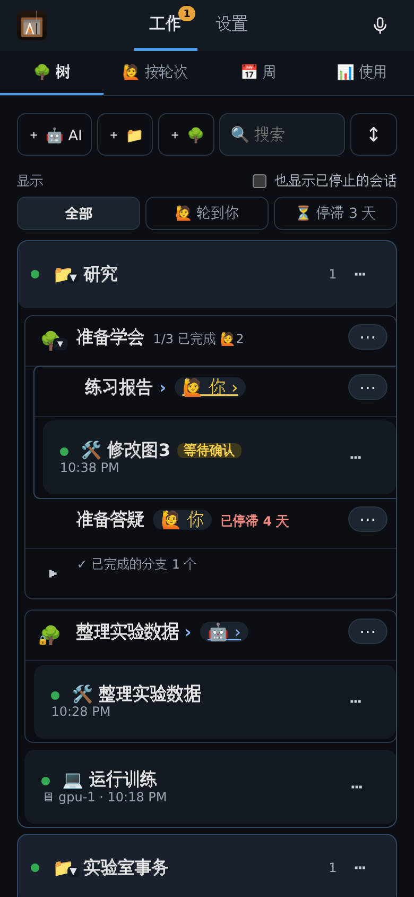
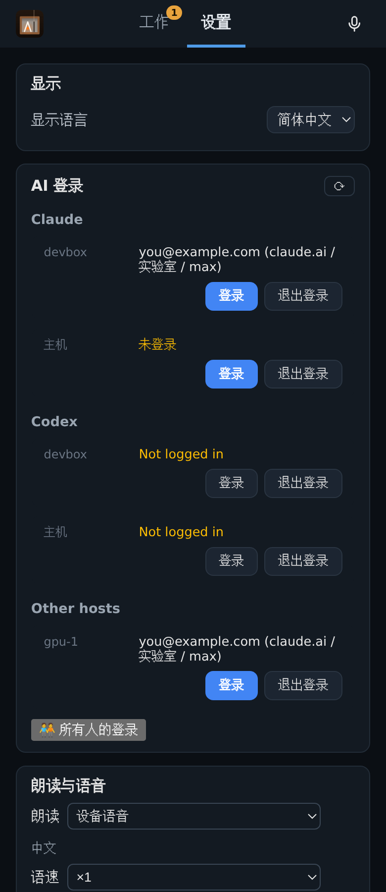
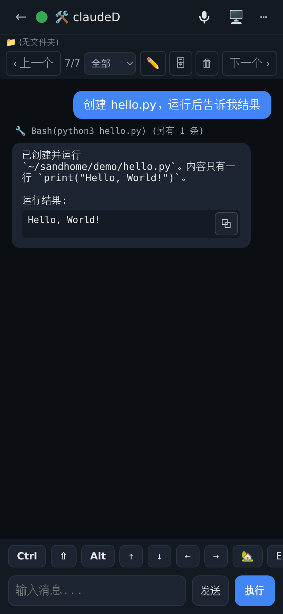
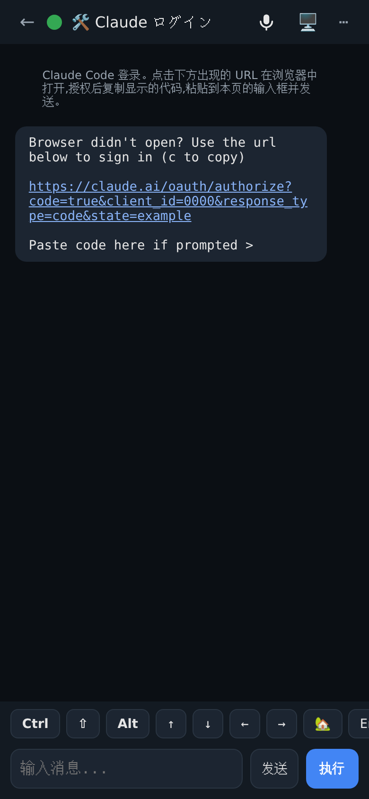
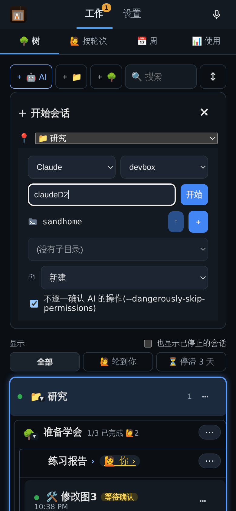
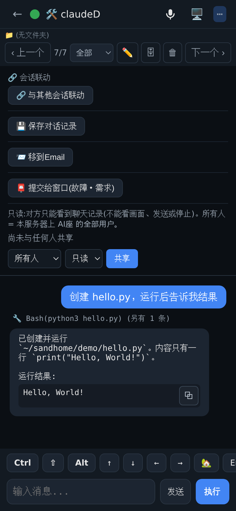
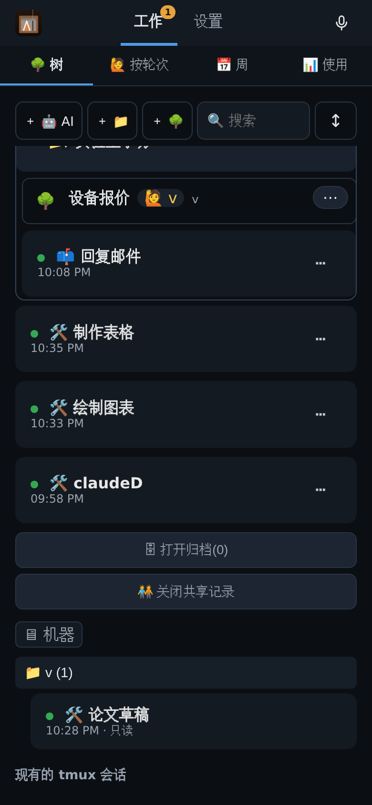
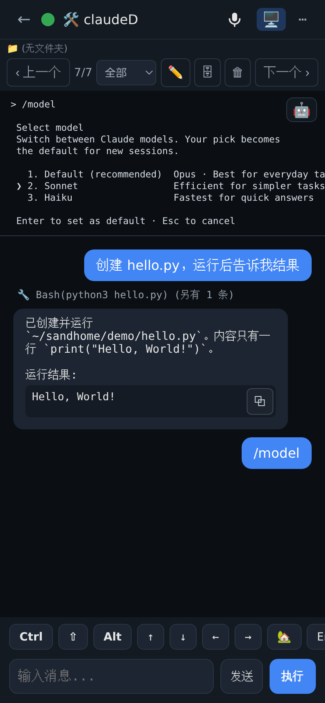
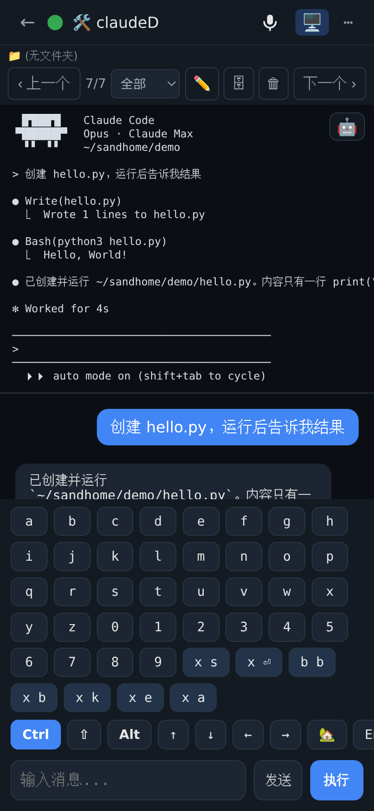
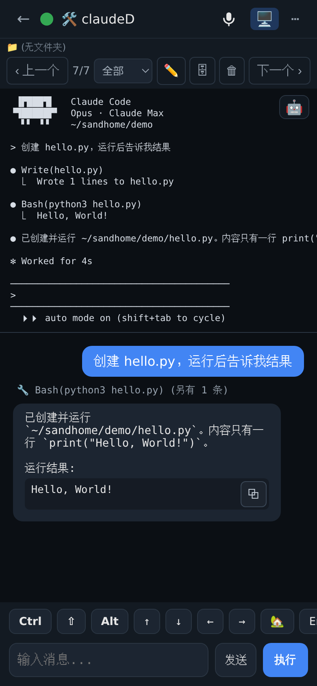

这是一份指南，介绍如何在手机或电脑的浏览器中使用服务器上的 AI 代理（Claude Code 等）。基础篇说明从创建账号到能够进行日常 AI 编程的过程。各服务器安装的功能略有不同，不清楚的地方请向管理员确认。
AI座 是在 https://<サーバー>/ 打开的聊天式界面。你在聊天中写下的指令，会发送给在服务器上你专属容器中运行的 Claude Code，回复会返回到聊天中。
文件夹与工作树、按轮次、巡览、通知、通行密钥、主机和 root 的会话、其他机器等内容在进阶篇中。
如果你有管理员允许的域名下的 Google 账号，就可以在 AI座 界面上自己创建账号（仅限启用了此功能的服务器）。否则请让管理员为你创建。
https://<サーバー>/，通过“使用 Google 登录”选择允许的域名下的账号。-、_。开头必须是小写英文字母或 _。最多 32 个字符。如果只用 AI座，则不需要 SSH。不过，注册用于 mailbox 和主机会话的通行密钥需要用 SSH 登录一次，所以尽早完成会比较省事。请根据你使用的电脑，按下面其中一种步骤操作。
# 在自己的电脑上：保存收到的密钥并收紧权限
mkdir -p ~/.ssh
mv ~/Downloads/id_ed25519_<ユーザー名> ~/.ssh/
chmod 600 ~/.ssh/id_ed25519_<ユーザー名>
# 首次登录。登录后会立即要求设置密码
ssh -i ~/.ssh/id_ed25519_<ユーザー名> <ユーザー名>@<サーバー>在 MSYS2 中，~ 是 MSYS2 的主目录（例：C:\msys64\home\<名前>），与 Windows 的主目录（C:\Users\<名前>）不同。下载的文件在 /c/Users/<Windowsの名前>/Downloads/ 中。放在 MSYS2 的 ~/.ssh 中的密钥，PowerShell 的 ssh 是看不到的。
Windows 10/11 自带 ssh（如果没有，请在“设置 → 系统 → 可选功能”中添加“OpenSSH 客户端”）。在 PowerShell 中执行以下命令。由于不能使用 chmod，权限用 icacls 来收紧。
# 将密钥移到 C:\Users\<Windowsの名前>\.ssh\
mkdir -Force $env:USERPROFILE\.ssh
Move-Item $env:USERPROFILE\Downloads\id_ed25519_<ユーザー名> $env:USERPROFILE\.ssh\
$key = "$env:USERPROFILE\.ssh\id_ed25519_<ユーザー名>"
# 让自己以外的人无法读取（切断继承，只允许自己读取）
icacls $key /inheritance:r
icacls $key /grant:r "$($env:USERNAME):(R)"
# 首次登录。登录后会立即要求设置密码
ssh -i $key <ユーザー名>@<サーバー>如果提示“UNPROTECTED PRIVATE KEY FILE”或“bad permissions”，请重新执行 icacls 那两行。在 PowerShell 中，-i ~/.ssh/... 里的 ~ 有时不会被展开，所以这里写成了 $env:USERPROFILE。
在这次首次登录设置密码之前，密码处于谁都无法使用的状态。从第二次起用同样的命令即可登录。
-i把以下内容写进配置文件，只需 ssh aiza 就能登录。配置文件在 Mac、Linux、MSYS2 中是 ~/.ssh/config，在 Windows 自带的 OpenSSH 中是 C:\Users\<Windowsの名前>\.ssh\config（无扩展名）。IdentityFile 中的 ~ 在两者中都会被 ssh 解释为自己的主目录。
Host aiza
HostName <サーバー>
User <ユーザー名>
IdentityFile ~/.ssh/id_ed25519_<ユーザー名>aiza-set-email you@example.com。之后就可以用该邮箱地址的 Google 账号登录了。AI座 界面顶部有三个标签页：工作（会话和工作树）、新消息（邮件等新消息的汇总，仅限使用此功能的人）、设置。会话是指在服务器上持续运行的一个工作场所（Claude Code 或 shell），打开后就是聊天界面。在浏览器中打开 https://<サーバー>/ 会显示“工作”。

| 位置 | 含义 |
|---|---|
| 标志 | 什么是 AI座（说明） |
| 工作、新消息、设置 | 标签页。“工作”上的数字是“轮到你”的数量。浏览器的“返回”不会在标签页之间切换 |
| 📖 | 阅读服务器文档的界面（有的服务器没有） |
| 麦克风 | 朗读 / 语音模式（进阶篇） |
| 🌳 树、🙋 按轮次、📅 周、📊 使用 | 工作的视图。🌳 树显示文件夹、工作树和会话，🙋 按轮次是按轮到谁排列的列表（进阶篇） |
| ＋ 🤖 AI | 开始新会话（第 3 章） |
| ＋ 📁 / ＋ 🌳 | 新建文件夹 / 新建工作（树）。选中了树的分支时，在它下面添加分支 |
| 🔍 搜索 | 搜索聊天内容 |
| ↕ | 排序。拖动行左侧的 ⠿，把它移到文件夹或树的项目中（进阶篇） |
| ＋ 或 ↕ 的下方 | 所按按钮的输入栏会在工具行正下方打开，所按的按钮显示蓝框。再按一次同一按钮或按 Esc 关闭 |
| 显示 | 全部 / 🙋 轮到你 / ⏳ 停滞 3 天。勾选“也显示已停止的会话”会把已停止的会话也显示出来 |
| 文件夹、树的行 | 按一次是选中（边框发蓝光）。再按一次选中的行是展开 / 收起（按 📁 或 🌳 右下角的 ▶/▼ 也能展开收起）。工具行的 ＋ 会在选中的文件夹或分支中创建 |
| 📁、🌳 | 📁 是文件夹，🌳 是工作树的根。右下角的小标记：▶ 已收起、▼ 已展开（树的 ▽ 表示连已完成的分支也显示）。🌳 左下角的 🔒 表示没有与任何人共享的树。嵌套用边框围起来表示。灰色的 >_ 标记是目录（服务器上的位置，如工作目录），与 AI座 的文件夹不同 |
| 名称前的图标 | 会话运行的位置。🛠️ devbox（日常的 Claude 等）、📫 mailbox、🏠 主机、🔒 root、💻 通过 ssh 连接的其他机器（行的第二行显示 🖥 机器名） |
| 每行的 ● | 绿色表示运行中，灰色表示已停止的会话。点按绿色的会停止，点按带蓝色圆环的灰色的会继续（都会弹出确认） |
| 行右侧的 ⋯ | 会话：重命名、与其他会话联动、归档（只是从列表中隐藏）、删除。文件夹：重命名、工作目录、共享整个文件夹、归档、删除（仅限空文件夹）。树的分支：标为完成、共享等（进阶篇） |
| 最下方 | 🗄 归档、🧑🤝🧑 共享记录（别人共享给你的会话，第 4 章）、🖥 机器（Windows 机器黑板） |
工作树把一项工作(例如“准备学会”)分成若干分支(“练习报告”“准备答疑”…)来写，并让每个分支都能看出现在轮到谁(🙋 人・🤖 AI・💤 等待・✓ 完成)。用于查看人和 AI 一起推进的工作卡在哪里。
分支的创建方法、🧭 负责与 🤝 协助、谁能看到树等，见进阶篇。

卡片纵向排列：显示（显示语言）、AI 登录、朗读与语音、通知（是否通知此设备）、账户（退出登录）。
请先在 AI 登录卡片中登录 devbox 的 Claude（见下文“登录 Claude”）。在没有登录的位置，Claude 无法运行。

| 位置 | 含义 |
|---|---|
← | 返回打开前所在的标签页（向右滑动界面，或用浏览器的“返回”也能返回） |
| ●（名称左侧） | 是否在运行。绿色时点按会停止，灰色时点按会继续（会弹出确认） |
| 麦克风 | 语音输入、朗读（进阶篇） |
| 🖥️ | 打开或关闭终端画面（画面面板）。见第 6 章 |
| ⋯ | 此会话的菜单：🔗 与其他会话联动、💾 保存对话记录、📨 移到 Email、📮 提交给窗口（故障・需求）、与他人共享（第 4 章） |
| 巡览栏 | 标题下方的栏。用 ‹ 上一个、下一个 › 切换到列表中前后的会话。✏️ 重命名、🗄 归档、🗑 删除也在这里（进阶篇） |
| 按键行 | Ctrl ⇧ Alt ↑ ↓ … 可以横向滚动，最右边是 📎（添加附件）。见第 5 章 |
| 发送 / 执行 | 执行会带 Enter，发送不带 Enter。见第 5 章 |
巡览栏一开始就是打开的。点按聊天的名称（🛠️ 右侧）会关闭，再点一次会打开。关闭浏览器后会话也会继续运行。从列表重新打开，就能接着看后续内容。在手机上先“添加到主屏幕”，收到回复时就会收到通知（iPhone 上这是必需的）。
平时只需选择 Claude 创建会话，然后在聊天中下指令。Claude 在你专属的容器（devbox）中创建文件、执行命令。
使用 Claude 之前，要用 Claude 账号在每个使用位置各登录一次。平时使用的 devbox，请最先完成登录。

← 回到设置，devbox 那一行显示出邮箱地址就完成了。如果没有马上变化，用标题旁的 ⟳ 重新获取。
claudeD 这样的候选（AI 的名称加上位置的一个字母，已有同名时会加上编号）。也可以改写。sandhome（容器中的主目录）。用“打开子目录…”逐级向下，用 ↑ 向上，用 ＋ 在当前位置新建目录。

别人共享给你的会话，会放在最下方的🧑🤝🧑 打开共享记录中（与归档一样，默认是收起的）。打开后会列出按所有者分的文件夹（📁），打开文件夹就能看到那个人的会话。打开只读的会话时没有输入框，顶部会显示“〇〇 的共享记录(只读)”。
也可以按文件夹共享（进阶篇）。
| 按钮 | 发送的内容 | 使用时机 |
|---|---|---|
| 执行 | 文字 + Enter。输入框为空时只发送 Enter | 日常的指令。想在选择菜单中确定当前项时，保持为空并点执行 |
| 发送 | 只发送文字（不带 Enter） | 菜单显示期间想输入文字时，命令输入到一半想按 Tab 补全时 |

/model 菜单中按 ↓ 后的样子。❯ 的移动只能在画面面板中看到
| 想做的事 | 按键 |
|---|---|
| 停止 Claude 的工作 | Esc |
| 中断 shell 命令 | Ctrl → c |
| 选择菜单项 | 用 ↑ ↓ 移动后按 ⏎（或保持为空点执行） |
| 关闭菜单 | Esc |
| 切换 Claude 的模式（权限确认、计划模式） | ⇧Tab |
| 调出之前发送过的指令 | ↑ |
在服务器上，Claude 和 shell 是在真正的终端中运行的。AI座 以两种形式展示其情况。

| 症状 | 处理方法 |
|---|---|
| 无法登录 AI座 | 确认选择的是允许的域名下的账号。如果是管理员创建的账号，用 SSH 执行 aiza-set-email（第 1 章） |
| SSH 连不上、超时、被询问未知主机的密钥 | 可能是只允许从内部网络 SSH 的服务器。按管理员指引的方法进入内部网络后再 SSH（第 1 章）。如果从外部连接时保存了错误的密钥，用 ssh-keygen -R <サーバー> 删除 |
| Claude 没有任何回复、要求登录 | 在设置界面确认该位置那一行是否显示“未登录”（黄色），然后登录（第 3 章）。登录后仍不工作时，用卡片标题旁的 ⟳ 重新获取，并看看是否登录成了别的账号 |
| 聊天看起来停住了 | 用 🖥️ 打开画面面板。多数情况是停在菜单或确认提问上，用按键行回答 |
| 点了执行但 Claude 没有动作（输入框中还留着文字） | AI座 会在几秒内发现并在聊天中显示 ⚠，每 30 秒重新发送一次 Enter。被接收后会显示“受け付けました”（已接收）。着急时，不输入文字直接按执行也一样 |
| 想把界面改成英文或中文 | 在设置标签页的“显示”中选择（进阶篇） |
| 按了键却看不到反应 | 因为原地改写不会出现在聊天中。请在画面面板中确认（第 6 章） |
| mailbox 或主机的会话要求“解锁”而无法继续 | 确认是否注册了通行密钥、是否在这台设备上注册的（进阶篇）。如果出现了锁定中的提示条，点按它 |
| 想停止 Claude 的工作 | Esc。如果要停止整个会话，点按名称左侧绿色的 ● 停止（对话会被保存，点按灰色的 ● 可以继续） |
| 界面一直是旧的 | 重新加载页面（如果是添加到主屏幕的应用，先关闭再重新打开） |
| 找不到会话在哪里 | 可能在文件夹或工作树的分支下。点按 📁 行展开。已停止的会话勾选“也显示已停止的会话”后会显示。如果记得归档过，看最下方的“🗄 打开归档”（进阶篇） |
| 还是不清楚 | 找管理员商量 |